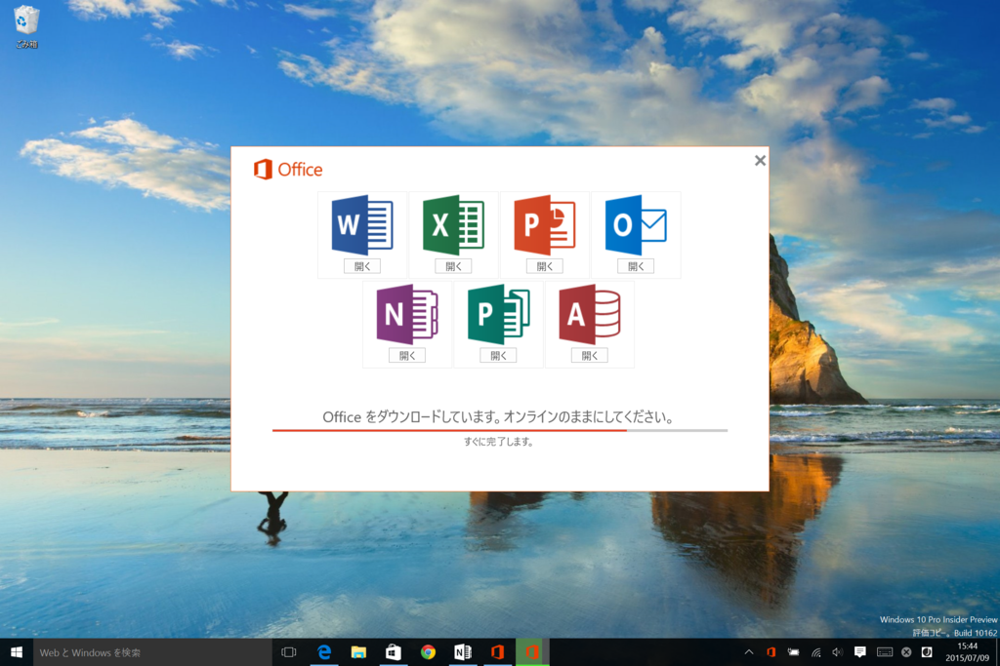
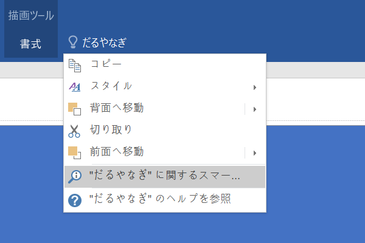
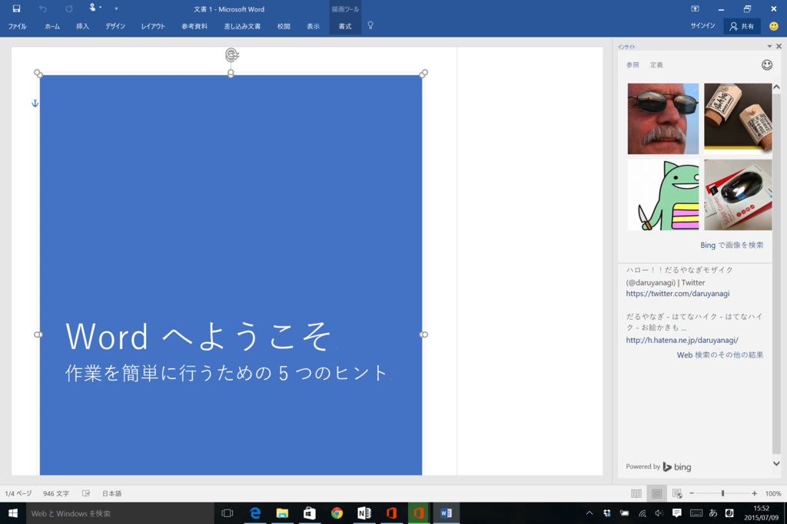
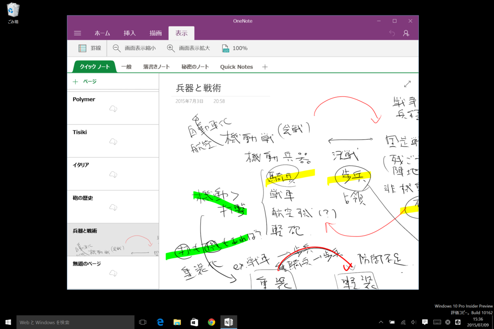
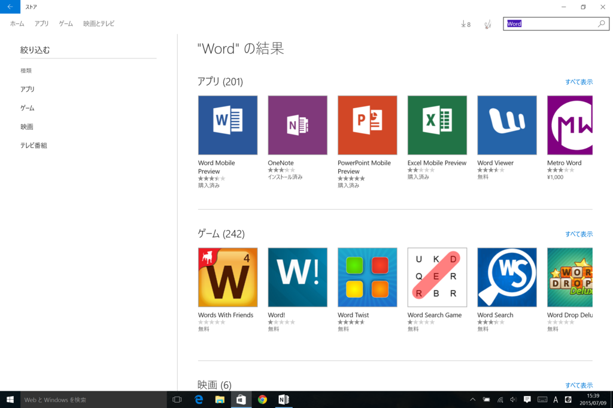
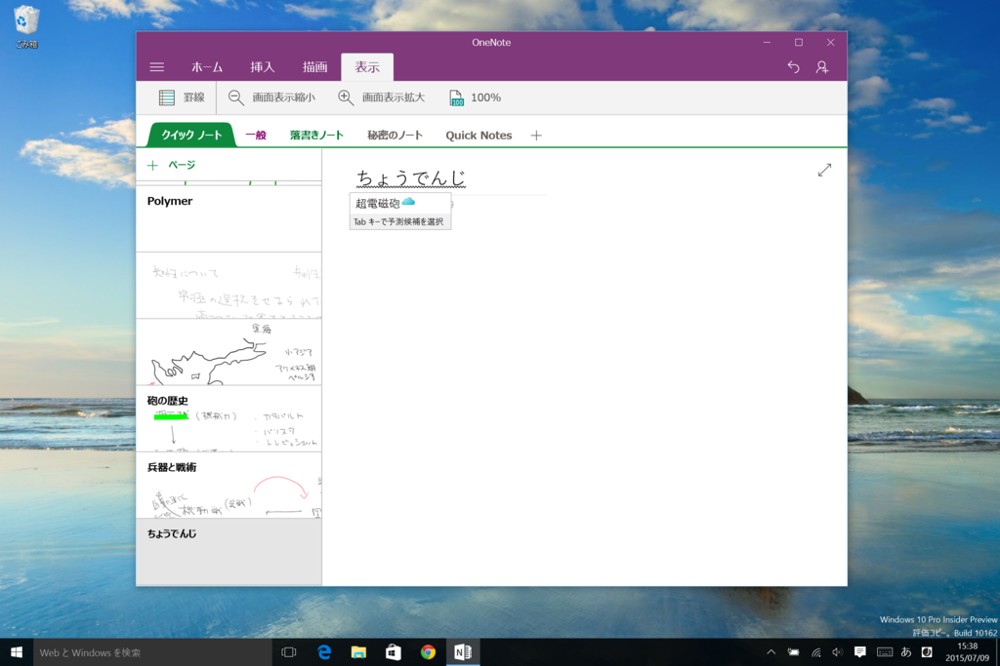

Windows 10 で Office 2016 プレビュー
公開日：

Windows Insider の皆様、こんにちは。
オペレーティング システム グループ (OSG) の Gabe です。Windows Insider Program の最新情報をお知らせします。 Windows 10 の一般提供開始を 7 月 29 日に控え、現在調整と安定化に力を注いでいます。今回のメールでも引き続きチェックする価値がある新機能をご紹介します。 新機能とその他の最新情報については、こちら (英語) でご確認いただけます。
それから、嬉しいご報告が 1 つあります。Windows Insider の皆様は、Windows 10 で Office 2016 のプレビュー版をご利用いただけるようになりました。Office 2016 のプレビュー版には新機能が搭載されており、2015 年の後半に Office ユーザーへの配信を予定しています。 Windows Insider の皆様には、早期にフィードバックをお寄せいただきたいと考えております。 ぜひ今すぐ Office 2016 Preview をダウンロードして、ご利用ください。
執筆時現在、Update 2 が利用できる（Microsoft、「Office 2016 Preview Update 2」を公開。手書き数式の認識などに対応 - 窓の杜）。
早速うちの Windows 10 環境にも入れてみた。エラーが出てインストールできなかったりもしたけれど、再起動とかしてみるとなんとか入った。


とりあえずちゃんと動いている感じはする。イマイチ便利なのかどうかわかんないけど、コマンド検索ツールがついたのはイイのかもしれない。
なお、Windows 10 では“モバイル版*1”の「Microsoft Office」も利用できる。ユーザーインターフェイスは iOS/Android と似通った感じで、正直、「Word」あたりはこっちの方が使いやすいと思う（俺には「ワードパッド」で十分なのかもしれぬ……）。一方、「Excel」なんかはピボットテーブルとか使いたいので少し物足りないかもしれないけど。

「OneNote」はデフォルトでインストール済み。

ほかのは「ストア」から入手する必要がある。

ちょっと前に使ったときには日本語変換ができなかったのだけど、さっき試したらバッチリ。クラウド変換機能も動いた。ようやく Windows 10 もリリースへの準備が整ってきた感じ。まだちょっと不安だけど……。
*1:Windows ストア アプリ版？ ユニバーサル アプリ版？ なんだっけ？